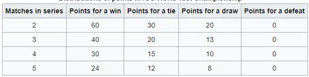

memories
1 August 2019 - 23 june 2021
The 2019–2021 ICC World Test Championship was the inaugural edition of the ICC World Test Championship of Test cricket. It started on 1 August 2019 with the first Test of the 2019 Ashes series, and finished with the Final at the Rose Bowl, Southampton in June 2021.
It came nearly a decade after the International Cricket Council (ICC) first approved the idea for a World Test Championship in 2010, and following two cancelled attempts to hold the inaugural competition in 2013 and 2017.
It featured nine of the twelve Test playing nations, each of
whom was scheduled to play a Test series against six of the
other eight teams. Each series consisted of between two and
five matches, so although all teams were to play six series
(three at home and three away), they were not scheduled to
play the same number of Tests.
Each team were able to
score a maximum of 120 points from each series and the two
teams with the most points at the end of the league stage
would contest the final.
In the case of a draw or a tie
in the final, the two teams playing the final would be
declared joint champions. However, the COVID-19 pandemic
impacted on the Championship, with several rounds of matches
being postponed or cancelled. In November 2020, the ICC
announced that the finalists would be decided by percentage
of points earned.
Some of the Test series in this Championship were part of a longer ongoing series, such as the 2019 Ashes series. Also, some of these nine teams would play additional Test matches during this period which were not part of this Championship, as part of the ICC Future Tours Programme for 2018–23, mainly to give games to the three Test playing sides not taking part in this competition. On 29 July 2019, the ICC officially launched the World Test Championship.
On 2 February 2021, due to the COVID-19 pandemic, Australia postponed their away series against South Africa, resulting in a guaranteed berth in the final for New Zealand. On 6 March 2021, India also confirmed their berth for the final, after beating England by 3–1 in a home Test series. The final saw New Zealand win by eight wickets, securing their second global cricket title after their 2000 ICC KnockOut Trophy win.
venues
On 18-23 june 2021, the ICC confirmed the venues Panorama of the Rose Bowl, Southampton, the venue for the final match.
Final
The final of the 2019–2021 ICC World Test Championship, the
inaugural ICC World Test Championship, was played from 18 to 23
June 2021 at the Rose Bowl, Southampton, England, between India
and New Zealand.
It was initially scheduled for five days,
but time lost during the game to rain interruptions meant that
the planned reserve day was used.[1] New Zealand won the match
by eight wickets to be crowned as the winners of the inaugural
ICC World Test Championship.
New Zealand won the ICC Test
Championship mace for the first time, and were also awarded the
cash prize of US$1.6 million, while India won US$800,000.
It was New Zealand's second major ICC trophy win after emerging
victorious at the 2000 ICC KnockOut Trophy, and Kane Williamson
became the second New Zealand captain after Stephen Fleming to
win an ICC event.
On winning the final, Williamson said it
was a "very special occasion and a fantastic feeling". India's
captain, Virat Kohli, acknowledged that New Zealand were the
better team, but also called for a best-of-three series to
decide future World Test Championships.
New Zealand's Kyle
Jamieson was named as the man of the match, after taking seven
wickets, including a five-wicket haul in the first innings
Kyle Jamieson 5/31 (22 overs)
Devon Conway 54 (153)
Tim Southee 4/48 (19 overs)
Kane Williamson 52* (89)
Summary
Day 1
The first day of play was scheduled to take place on Friday 18 June 2021. As had been forecast, there was heavy rain throughout the day which prevented any play from taking place. The rain stopped in the afternoon, but it had caused the outfield to become waterlogged and the umpires decided to cancel the day's play at 3pm BST. The loss of six hours ensured that the game would continue to the sixth and reserve day on Wednesday 23 June.Day 2
Players gathering in the field ahead of the start of Day 2 of the inaugural WTC Final Players and match officials gathering in the field ahead of the start of Day 2 of the inaugural WTC Final The weather was dry at the start of the second day, and with no rain forecast, play began on time at 10:30am. New Zealand won the toss and elected to field first, putting India in to bat. Captain Kane Williamson said that his decision was due to the cool weather, although he said that he expected a consistent wicket throughout the game.India's opening batsmen, Rohit Sharma and Shubman Gill, began the match strongly by recording an opening partnership of 62 runs. Despite favourable conditions New Zealand's fast bowlers Tim Southee and Trent Boult were unable to bowl consistently.Kyle Jamieson started bowling before lunch and took the first wicket of the match, Rohit Sharma edging a ball to third slip where it was caught by Southee. Gill then fell too, caught off the bowling of Neil Wagner, to leave India at 69 for two at lunch, with Cheteshwar Pujara and Indian captain Virat Kohli the two batsmen.
Kyle Jamieson bowling to Rohit Sharma in the inaugural WTC Final Kyle Jamieson bowling to Cheteshwar Pujara in the inaugural WTC Final Pujara and Kohli batted cautiously early in their partnership, both before and after lunch, with Pujara taking 50 minutes and 35 balls to score his first run. He then scored successive fours but was dismissed after 16 more runless balls, leg before wicket (lbw) to Boult.
The score at that point was 88 for three, with Ajinkya Rahane joining Kohli at the crease. There were several interruptions for bad light during the afternoon session, first forcing an early tea, and then eventually ending the day's play after only 64.4 overs with India on 146.[45][44] Kohli and Rahane remained as the not out batsmen overnight, on 44 and 29 runs respectively.
Day 3
Fans enjoying the WTC Final on Day 3 Fans enjoying the WTC Final on Day 3 morning The third day was another day of rain showers, and play was delayed slightly, beginning at 11am. Kohli fell in the third over of the day, lbw to Jamieson without adding to his overnight score of 44.Rishabh Pant was dismissed a few overs later, caught by Tom Latham at slip off Jamieson's bowling on only 4 runs. Rahane and new batsman Ravindra Jadeja withstood the New Zealand bowling for a while after this, with Rahane advancing his score to 49. He was then dismissed by Wagner, playing a hook shot which was caught at mid wicket.
Former Indian player V. V. S. Laxman attributed the wicket to Williamson's captaincy, noting that the captain had set the field differently in successive balls and given Wagner advice regarding Rahane's reputation for being a "compulsive pull shot or hook shot player".
Ravichandran Ashwin came to the crease and scored quickly, recording 22 runs from 27 balls and taking India past 200. He lost his wicket shortly afterwards, edging a catch to slip off the bowling of Southee. India were 211 for seven at lunch.
In the third over after lunch, Jamieson took two wickets in two balls, dismissing Ishant Sharma with a ball which was caught at slip, followed by an inswinger which dismissed Jasprit Bumrah for a duck. This gave Jamieson the opportunity to take a hat-trick, but he was unsuccessful as the next ball was hit by Mohammed Shami for four.
Nonetheless, Jamieson finished with bowling figures of 5 for 31 from 22 overs, with 12 maiden overs, a performance described by The Guardian's Tanya Aldred as "astonishing". Boult dismissed Jadeja for 15 in the first ball of the next over, leaving India all out for 217, a score which Aldred considered "slightly short of par".
Devon Conway and Tom Latham opened the batting for New Zealand, scoring a partnership of 70 before Latham was caught by Kohli off the bowling of Ashwin. Conway, who batted for a total of three hours during the afternoon, went on to score the game's first half century.
India's bowlers were unlucky at times, as New Zealand's batsmen edged several balls from Shami which missed the fielders. India eventually dismissed Conway shortly before the close of play, the batsman making an error in hitting a ball straight to the mid-on fielder off the bowling of fast bowler Ishant Sharma.
The umpires then halted play for bad light at around 6:27pm, leaving New Zealand with a score of 101 for two. Williamson and Ross Taylor were the New Zealand batsmen at the close of play.
Day 4
The fourth day of the Test was rained out and no play was possible. New Zealand remained at 101 for the loss of two wickets.Day 5
Ageas bowl before the start of the play on day 6 Ageas bowl before the start of the play on day 6 The start of the fifth day was delayed due to rain with play resuming at around 11:30am BST.Ishant Sharma opened the day's bowling with Williamson and Taylor the batsmen. New Zealand got off to a slow start, inching to 117 for two at the end of the first hour of play. Shami and Ishant Sharma then struck, taking the wickets of Taylor, BJ Watling, and Henry Nicholls in the morning session and leaving New Zealand with a score of 135 for five at lunch.
Williamson and new batsman Colin de Grandhomme worked to stabilise the New Zealand innings after lunch, advancing the score to 152 runs by the 80th over when India took the new ball. Shami got the first breakthrough of the afternoon session by dismissing De Grandhomme for 13 runs, lbw off a good length delivery.
The Indian fast bowlers attempted to keep the pressure on, but New Zealand's tailenders were able to add an additional 82 runs before the team were all out for 249. Captain Williamson fell just short of a fifty, scoring 49 runs before being caught at second slip by Kohli off the bowling of Sharma.
India started their second innings trailing New Zealand by 32 runs with Rohit Sharma and Gill once again opening the innings. Gill was the first to fall, to Southee, being dismissed lbw for a score of 8 runs with the team at 24 for one, and Rohit Sharma also fell lbw to Southee.
India were 64 for two, leading by 32 runs, when play was called off for the day. Pujara and Kohli were the two not out Indian batsmen at the close of play.
Day 6 (Reserve Day)
The sixth day of the Test was the official reserve day, allocated for weather related delays. India started the day on their overnight score of 64 for the loss of two wickets, with captain Virat Kohli and Cheteshwar Pujara at the crease.The pair only managed to add seven runs before Kohli was out caught behind by the wicket-keeper Watling off the bowling of Jamieson. Jamieson followed it up with the wicket of Pujara in his next over, caught at first slip, leaving India at 72 for four.
Rahane was the next batsman out, caught behind by Watling off the bowling of Boult. Pant and Jadeja took the team to lunch at 98 runs for five.
The post-lunch session saw Jadeja falling to medium-pacer Wagner with Watling securing a catch off a nick on the offside. Pant, the last recognised batsman, attempted to add runs quickly, but he then fell to Boult with Nicholls running in from point and catching the ball over his shoulders.
Pant had scored 41, the highest score amongst the Indian batsman, and the team was at 157 for seven at that stage. This left the Indian tailenders batting, and they advanced the score to 170 before the team were all out.
New Zealand started off with openers Latham and Conway, chasing a target of 139. The openers scored 33 runs but both were then dismissed by spinner Ashwin, leaving New Zealand at 44 for two. The Guardian's Adam Collins noted that New Zealand had appeared to be heading for an easy victory, but the second wicket prompted him to write "game very much on" in his commentary.
Williamson was joined by Taylor, and India then bowled four maiden overs in a row with the score on 46 for two, with New Zealand still needing 93 more runs to win from 31 overs.
They began to score more freely again from the 23rd over, however, and Williamson and Taylor remained at the crease for the remainder of the innings as New Zealand advanced to 140 for two in the 46th over, winning the match by eight wickets. Williamson scored a half-century of 52, and Taylor scored 47, ensuring that the New Zealand team comfortably achieved the target, and won the Test match.
It was Kohli's third defeat as the captain of India in knockouts and finals of ICC tournaments.
format
The tournament was played over two years. Each team were
scheduled to play six other opponents, three at home and
three away. Each series consisted of between two and
five Test matches.
Therefore, all participants did
not play the same number of Tests, but played the same
number of series. At the end of the league stage the top
two teams played in the final. Each match is scheduled
for a duration of five days.
Point scoring
The ICC decided that the same number of points would be
available from each series, regardless of series length,
so that countries that played fewer Tests were not
disadvantaged. It also decided that points would not be
awarded for series results, but for match results only.
These would be split equally between all the matches
in the series, regardless of whether or not a match was
a dead rubber, so that every match counted. In a
five-match series, therefore, 20% of the points would be
available each match, while in a two-match series, 50%
of the points would be available each match.
Therefore, depending on whether the series is 2, 3, 4 or
5 matches long, the number of points awarded for a
single match win would be a half, a third, a quarter, or
a fifth of the maximum possible from the series.
The
ICC also decided that a tie should be worth half of a
win and that a draw should be worth a third of a win.
This all meant that after each match, a side could
be awarded a half, a third, a quarter, a fifth, a sixth,
an eighth, a ninth, a tenth, a twelfth or a fifteenth of
the total points available from the series, depending on
the result and how many matches the series happened to
consist of. Ultimately, this meant a figure for the
total points available from the series needs to be
picked very carefully, as not many numbers give all
integers when split into all these different fractions
(360 does).
Being a highly composite number, when
120 was split into all these fractions, an integer was
obtained in all cases except one – the points awarded
for a draw in a 3-match series should be 131⁄3 (a third
of a third of 120), but the 1⁄3 had been dropped.
Each series would therefore carry a maximum of 120
points

A team that was behind the required over rate at the end of a
match would have two competition points deducted for each over
it was behind.
In January 2020, South Africa became the
first team to be docked World Test Championship points, after a
slow over-rate in the fourth Test against England.
The nine full members of the ICC who participated:
Australia
Bangladesh
England
India
New Zealand
Pakistan br]
South Africa
Sri Lanka
West Indies
>> Since each team played only six of the eight possible
opponents, the ICC announced that India and Pakistan would not
play against each other in the first and second editions of the
tournament.
The schedule for the World Test Championship was announced by
the ICC on 20 June 2018, as part of the 2018–2023 Future Tours
Programme.
Rather than being a full round-robin tournament in which
everyone played everyone else equally, each team played only six
of the other eight.
The COVID-19 pandemic impacted on international cricket fixtures,
including matches in the Championship. In March 2020, the second
Test match between Pakistan and Bangladesh was postponed due to
the pandemic. Later the same month, the two-match series between
Sri Lanka and England was also postponed. The following month
saw Australia's tour to Bangladesh and the West Indies tour to
England being postponed. In June 2020, the two-match
series between Bangladesh and New Zealand and the three-match
series between Sri Lanka and Bangladesh were both postponed.
South Africa's tour of the West Indies was postponed, after the
fixtures clashed with the West Indies rescheduled tour to
England.
On 29 July 2020, the ICC confirmed that their attention had
moved to the fixtures in the World Test Championship, with their
priority on rescheduling the six Test series that had been
postponed. The ICC ultimately accepted several series would not
take place as part of the Championship and changed the points
system to account for the variation in the number of series
played per team.